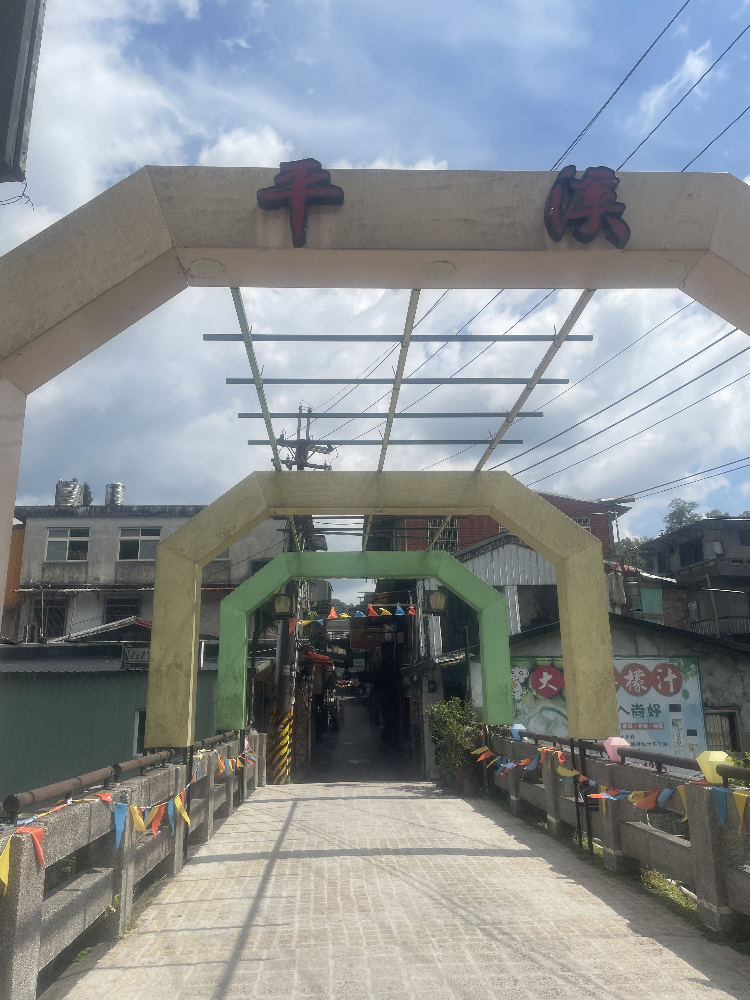
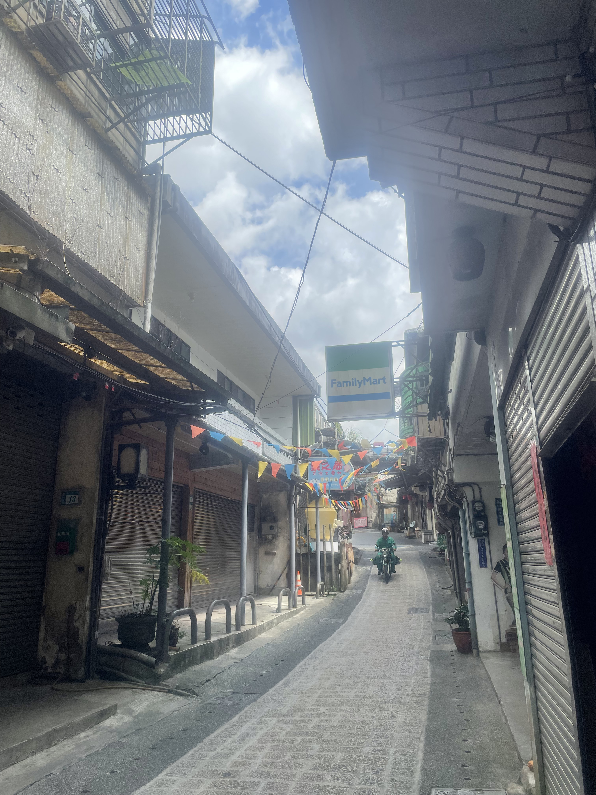
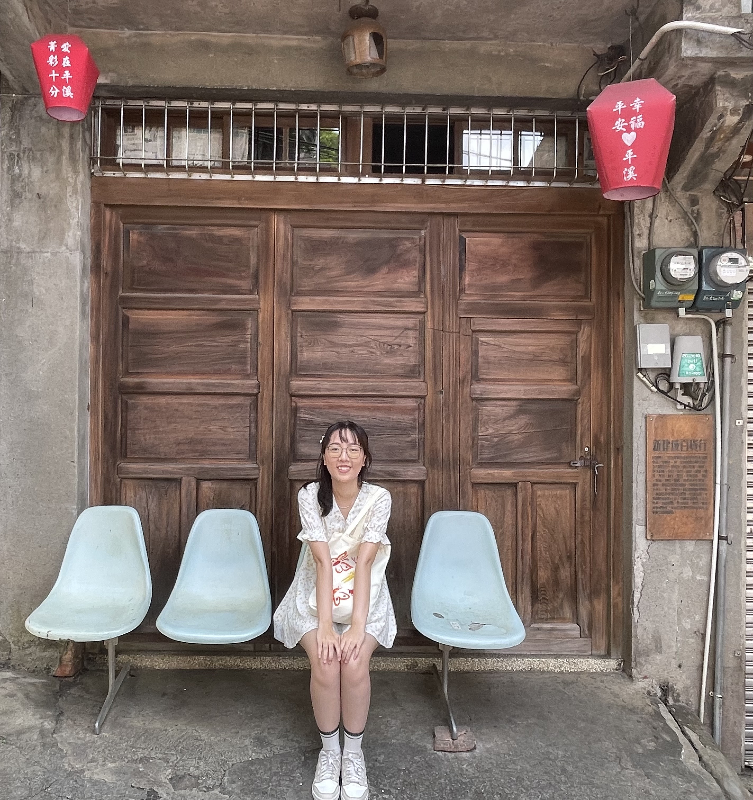
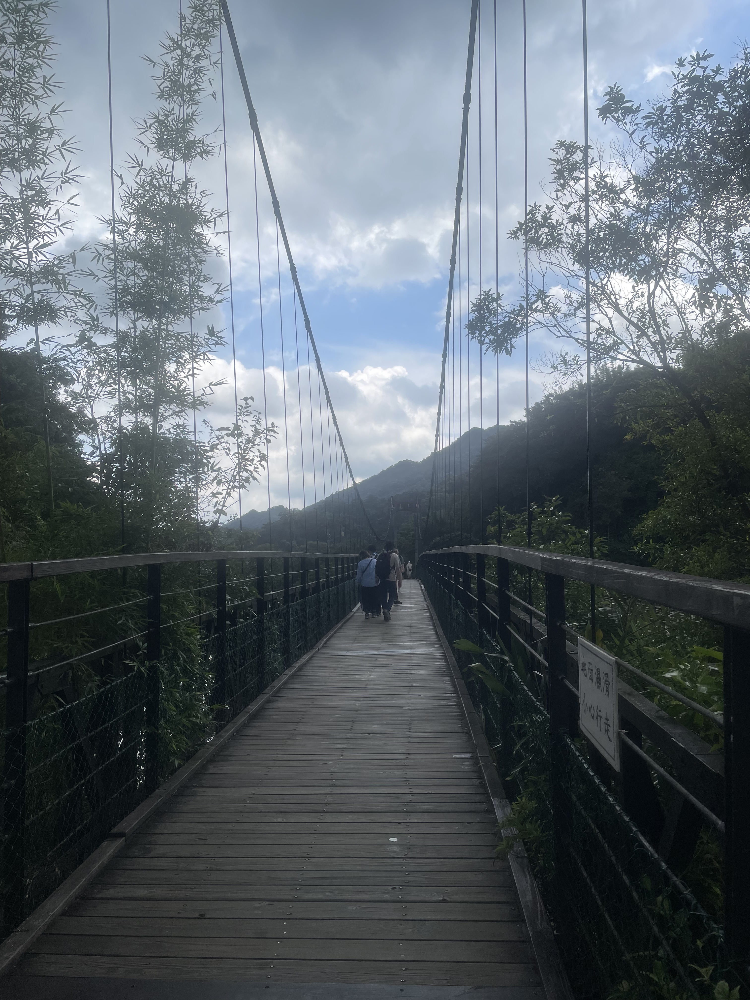
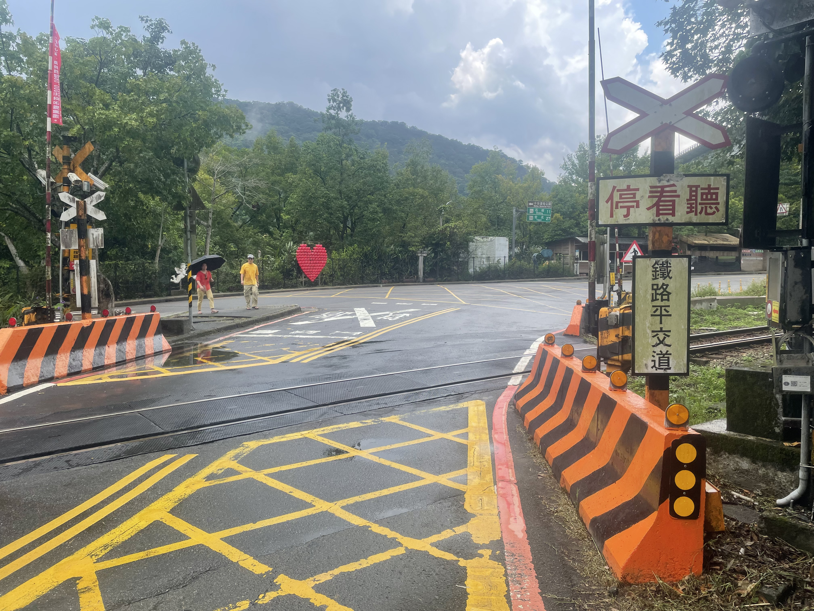
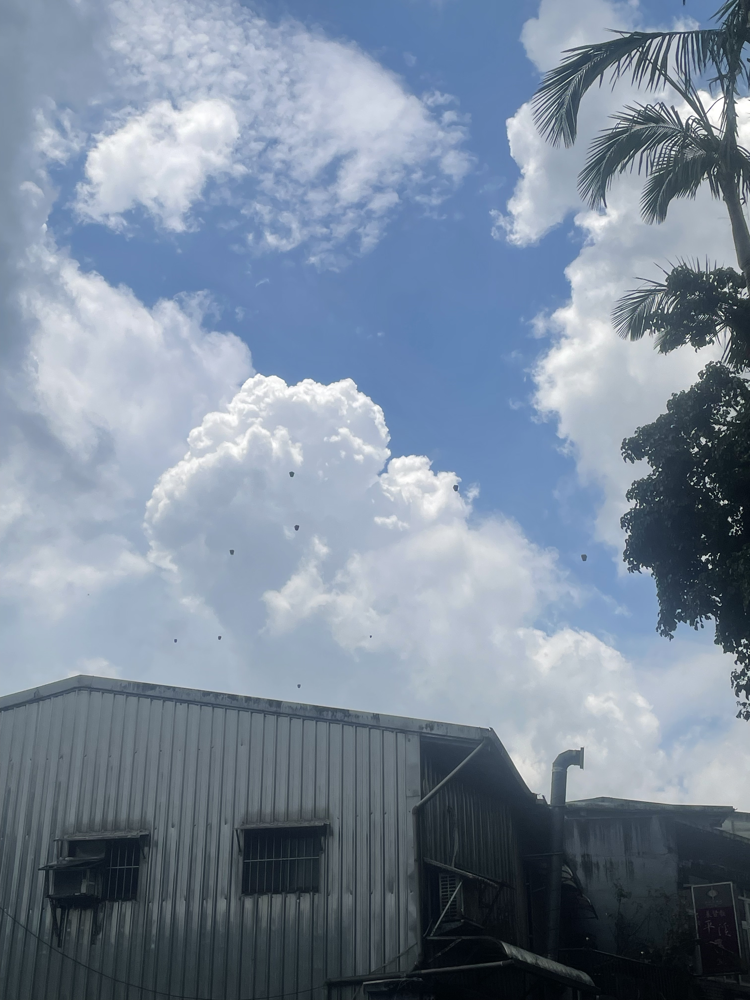
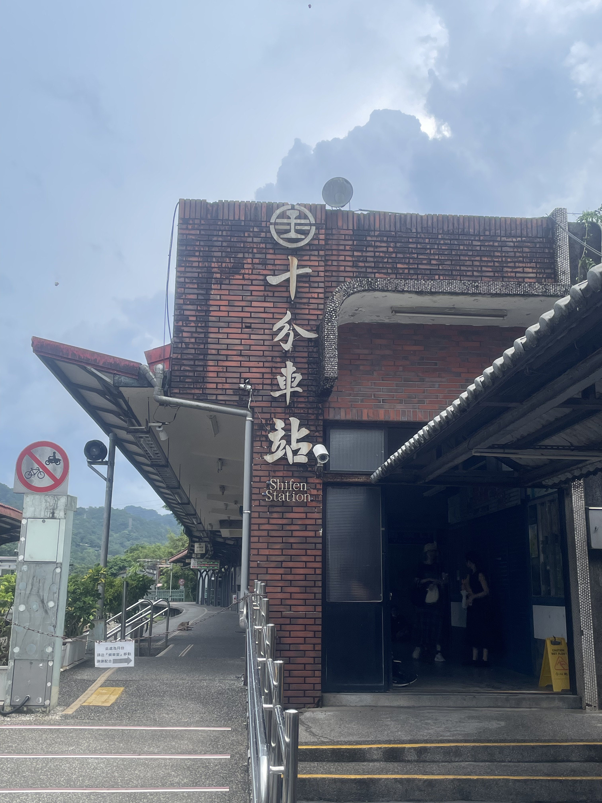
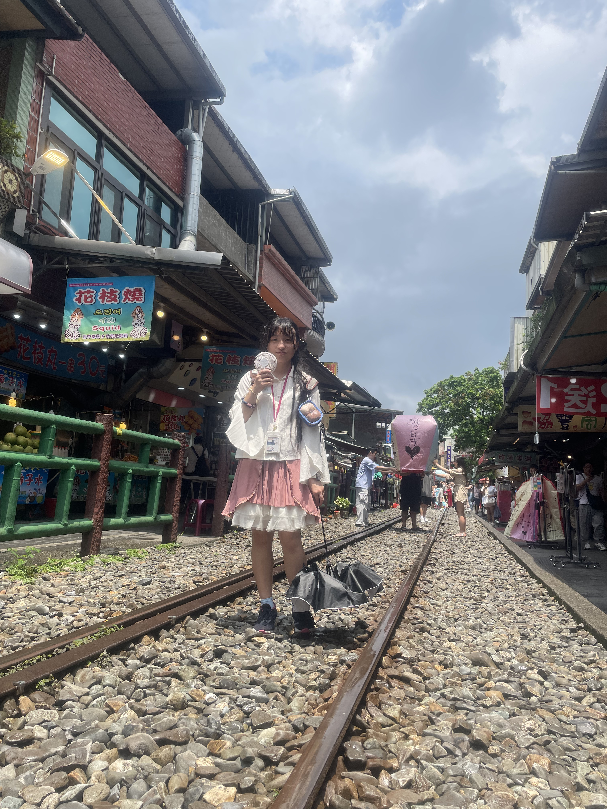

新北市平溪區
基本資訊
位於新北市東北部，地處台北盆地東側的丘陵與山谷地帶，以山林景觀、鐵道文化與傳統聚落聞名。區內河川縱橫、地形崎嶇，造就豐富的自然生態與觀光資源，也使平溪保有相對純樸的鄉村風貌，與都市區域形成明顯對比。 平溪最知名的是鐵道觀光與天燈文化，沿著平溪線鐵路的小站如十分、菁桐等，保留早期煤礦與農村聚落的特色，遊客可沿著鐵道步行或搭乘小火車欣賞沿途山水風光。區內的瀑布、步道與山林景觀，使平溪成為北台灣重要的戶外活動與生態旅遊目的地。
推薦景點
| 十分老街
是平溪線沿線最具知名度的歷史街區之一，因其鐵道沿街而建的特殊景觀而聞名。街道雖不長，卻充滿濃厚的懷舊氛圍，兩旁多為早期煤礦與商業聚落延伸而成的店鋪，保留傳統木造與磚瓦建築樣貌，形成獨特的山城街景。 老街最具代表性的活動是天燈文化，遊客可在鐵道旁放天燈，寫下心願隨風飄揚，形成獨特的互動體驗。街上亦聚集許多小吃攤與特色商店，販售地道美食與紀念品，將休閒、文化與生活結合在狹長的街區之中。
| 十分瀑布
是北台灣最具代表性的瀑布景觀之一，被譽為「台灣的尼加拉瓜瀑布」，以其寬闊的瀑布水面與奔騰氣勢聞名。瀑布高約20公尺、寬約40公尺，水流自懸崖傾瀉而下，撞擊岩石時激起水霧，形成壯麗的景觀與聲勢感。 十分瀑布周邊環境綠意盎然，步道設計完善，遊客可沿著觀景平台與吊橋近距離欣賞瀑布全貌與周邊溪谷風光。四周河谷與山林景色相互映襯，使瀑布景觀更顯雄偉與自然美感，亦是攝影與生態觀察的熱門地點。








